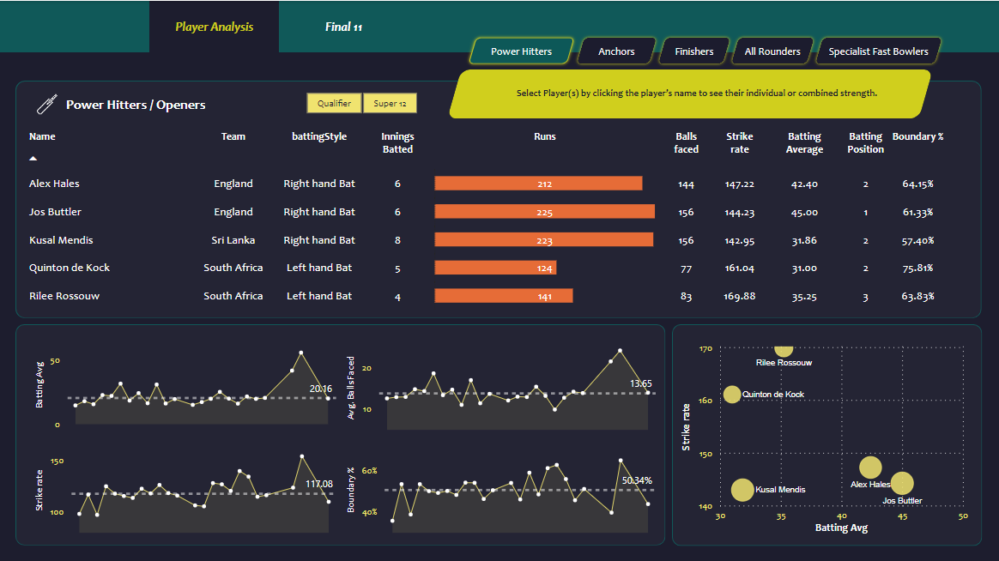

T20 World Cup Cricket
Data Analytics
Skills: pandas · Jupyter notebook · NumPy · Matplotlib · Data Analytics · Tableau · Data Visualization.

Created a T20 World Cup Cricket Data Analytics:
• Created a Power BI report to identify the top 11 players for a T20 cricket team.
• Data was scraped from espncricinfo using a Brightdata website tool.
• Cleaned and transformed data with Pandas and evaluated various player performance metrics.
• Utilized the resulting Power BI dashboard to select players for different categories (openers, middle order/anchors, finishers, all-rounders, specialist fast bowlers).
• The selected team using the Power BI dashboard has a 90% chance to win the game.